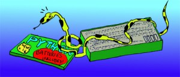

Por qué nos gusta Python
Python
Python es un lenguaje de programación de propósito general de alto nivel. Su filosofía de diseño hace énfasis en lograr productividad para los programadores y legibilidad del código.
Fue creado en el año 1990 por Guido Van Rossum y desde entonces ha sido desarrollado como un proyecto del Software Libre por desarrolladores alrededor del mundo.
A menudo es comparado con lenguajes como C, Java, Perl y Lisp, pero tiene muchas características distintivas que marcan su identidad propia:
Intérprete interactivo
Python viene acompañado de un intérprete interactivo o read-eval-print-loop que permite agilizar el desarrollo de programas ya que se pueden probar ideas y rápidamete ver como resultan sin necesidad de escribir un programa entero en el cual envolverla. Otros lenguajes como Smalltalk, Haskell o Scheme también tienen esta herramienta.
El siguiente es un ejemplo sencillo de uso del intérprete interactivo, los comandos ingresados por el usuario están precedidos por >>>:
>>> 1 + 2
3
>>> "hola"
'hola'
>>> nombre = "fabio"
>>> "hola " + nombre
'hola fabio'
Tipos de datos poderosos
Python incluye de forma nativa tipos de datos poderosos muy útiles a la hora de programar. Las listas y tuplas son secuencias de objetos:
lista = [1,2,3, “cuatro”, Cliente()]
tupla = ('u', 1, 3)
Ambos tipos de datos pueden almacenar cualquier tipo de objetos en orden. La principal diferencia entre estos dos tipos de datos es que las listas pueden cambiar en forma dinámica su tamaño mientras que las tuplas son de tamaño fijo (se dice que es un objeto inmutable, como los números o cadenas de texto).
Los diccionarios son una estructura de datos sin orden que permite almacenar valores asociados a una clave para luego poder recuperarlos a partir de esta. Solo objetos inmutables pueden ser clave de un diccionario.
dicc = {'a': 1, 'b': 10}
dicc['a'] obtiene el objeto 1
dicc[3] = ‘tres’ agrega al diccionario el objeto ‘tres’ asociado a la clave 3 .
Espacios en blanco con significado
En Python los bloques se delimitan mediante el uso de indentación en lugar de utilizar llaves:
if carteles == 0:
print “No hay carteles disponibles.”
else:
print “Hay %d carteles disponibles.” % carteles
Esto tiene como objetivo forzar una correcta indentación que redunde en una mayor legibilidad del código escrito.
i = 20
while i > 0:
print i
i -= 1
Tipado de pato
El nombre tipado de pato surge de la idea: “si un objeto camina como pato y come como pato, entonces debe ser un pato”.
Las restricciones de tipo no son checkeadas en tiempo de compilación, sino que las operaciones sobre los objetos siempre se intentan llevar a cabo y fallan en tiempo de ejecución si el objeto no puede responder al mensaje que se le envió.
Supongamos que definimos la función saludar como sigue:
def saludar(o):
print “hola %s“ % o.nombre
A esta función no lo interesa el tipo del objeto o, recibido como parámetro, lo único que le importa es que tenga el atributo nombre.
Así, si la variable m referencia un objeto de la clase Mujer y la variable h referencia un objeto de la clase Hombre y ambas clases tienen un atributo llamado nombre, entonces las siguientes llamadas se ejecutarán sin problemas:
saludar(m)
saludar(h)
Si la variable ‘a’ referencia a un objeto de la clase Anonimo y ésta no tiene un atributo llamado nombre, la llamada a:
saludar(a) lanzará una excepción.
Librería estándar amplia

Al igual que Java, Python cuenta con una amplia librería estándar que acompaña al lenguaje. Ésta incluye módulos para manejar expresiones regulares, crear interfaces gráficas, conectarse a bases de datos entre muchos otros.
Ésta es una de sus mayores ventajas y a esto se debe la popular expresión “Python viene con las baterías incluidas”.
Librerías externas
Además de los muchos componentes incluidos en la librería estándar de Python, hemos utilizando algunas librerías externas:
- PIL: librería para manejo de imágenes.
- Pysicopg: conector para el motor de bases de datos PostgreSQL.
- ReportLab: librería para generar documentos PDF.
- BeautifulSoap: librería para procesar documentos HTML. Su uso es descrito en la sección 1.1.37.
- Pynum2word: módulo que convierte números en palabras.
Comentarios
Comments powered by Disqus